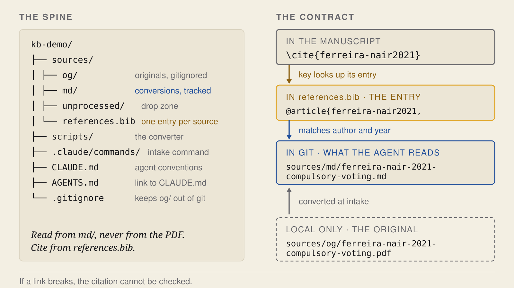
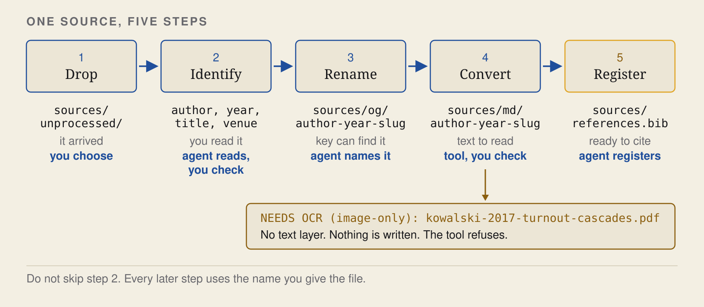
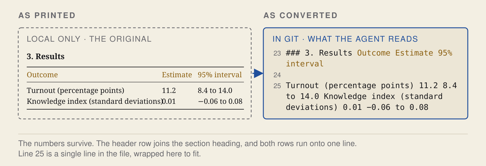

Before you start
Install Claude Code and the Open Science Skills (Getting started). The PDF converter also needs Java 11 or newer, and the check for scanned PDFs needs poppler-utils.
Whatever the agent reads is sent to your model provider. The sample files are invented. Before you use your own, check what your provider and your institution allow.
1. Set up the project
Open Claude Code in an empty folder:
mkdir my-project && cd my-project
claude/oss:research-repo .
2. Add a paper
Put a PDF in sources/unprocessed/ and run:
/process-sourceTo use the four sample files instead:
git clone https://github.com/scdenney/ai-for-research.git ~/ai-for-research
cp ~/ai-for-research/demos/knowledge-base/inbox/* sources/unprocessed/For each file, the agent:
- renames the original and files it:
Download (3).pdfbecomessources/og/ferreira-nair-2021-compulsory-voting.pdf - writes a Markdown copy:
sources/md/ferreira-nair-2021-compulsory-voting.md - adds a bibliography entry with a matching key:
ferreira-nair2021insources/references.bib
PDFs are converted with OpenDataLoader PDF. Check the author and year the agent picks, because the file name and the key are built from them.

3. Check the copy against the PDF
Open the Markdown copy next to the original.
- A scan with no text layer is refused. The converter reports
NEEDS OCR (image-only)and writes nothing. The original stays insources/og/until you run OCR on it, for example with/oss:vlm-ocr. - A table can keep its numbers and lose its layout. Nothing reports this.

4. End the session
/oss:finishedThis writes a handoff note (where things stand and what comes next) and adds an entry to the session log. The first time, it asks before creating these files. It does not commit. Read both, then commit:
git add -A
git status --short # no line should start with sources/og/
git commit -m "Add the first sources"The originals in sources/og/ are not committed, so back them up separately. If you push the project to GitHub, make the repository private: the copies are still copyrighted text.
5. Use it
- Pick up later. In a new session, run
/oss:sitrep. It reads the handoff and the log and checks them against the repository. - Check claims.
/oss:fact-checkchecks claims in a draft against the copies insources/md/. - Check references.
/oss:citation-checkchecks the reference list and the DOIs.
The reference-check demo has a manuscript to run both checks on. The full walkthrough covers all four sample files and an audit of a messy project.